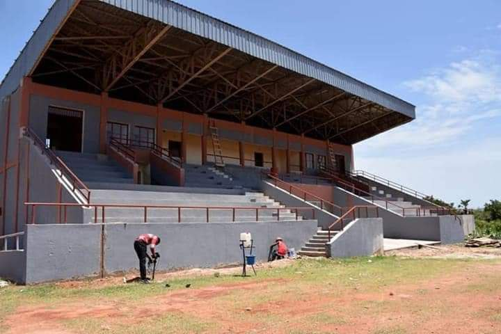
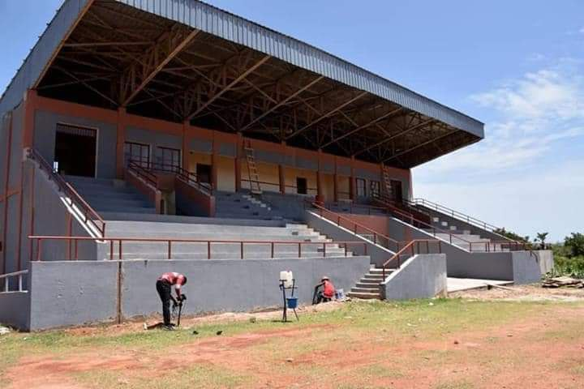

Stade municipal de Banfora
 
Au niveau du Sport, un stade municipal est disponibless en vue de promouvoir le sport dans la commune.l'équipe de la ville est ISCO.banfora a également des terrains d'entrainement sportif pour les jeunes comme le terrain de la police municipale . de la on y trouve les formations du football, et du karaté. le stade est situé sur la voix de Bobo-Dioulasso non loin du collège privé saint augustin.

Au niveau du Sport, un stade municipal est disponibless en vue de promouvoir le sport dans la commune.l'équipe de la ville est ISCO.banfora a également des terrains d'entrainement sportif pour les jeunes comme le terrain de la police municipale . de la on y trouve les formations du football, et du karaté. le stade est situé sur la voix de Bobo-Dioulasso non loin du collège privé saint augustin.